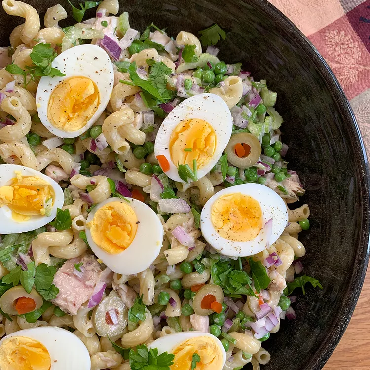

Tuna Pasta Salad

How to Make Tuna Pasta Salad
This tuna pasta salad is colorful and full of bright flavors. It's easy to make with ingredients you probably
already have. Everyone loves it!
Tuna Pasta Salad Ingredients
- 1 (16 ounce) package cavatappi (corkscrew macaroni)
- 1 cup mayonnaise
- 3 tablespoons lemon juice
- 2 tablespoons honey
- ½ tablespoon garlic powder
- salt and ground black pepper to taste
- 2 (8 ounce) cans tuna, drained
- 3 stalks celery, sliced
- 1 red onion, diced
- 1 cup peas
- ¼ cup chopped fresh parsley
- ½ cup chopped green olives
- 1 teaspoon lemon juice, or to taste
- 4 hard-boiled eggs, halved
How to Make Tuna Pasta Salad Step-By-Step
- Bring a large pot of lightly salted water to a boil; cook pasta at a boil until tender yet firm to the bite, 9
to 10 minutes. Drain and transfer to a large bowl.
- To make the dressing: Whisk mayonnaise, 3 tablespoons lemon juice, honey, garlic powder, salt, and pepper
together in a medium bowl. Set aside.
- Stir tuna, celery, onion, peas, parsley, olives, and 1 teaspoon lemon juice into pasta. Pour dressing over
salad, toss until coated, and add hard-boiled eggs on top.